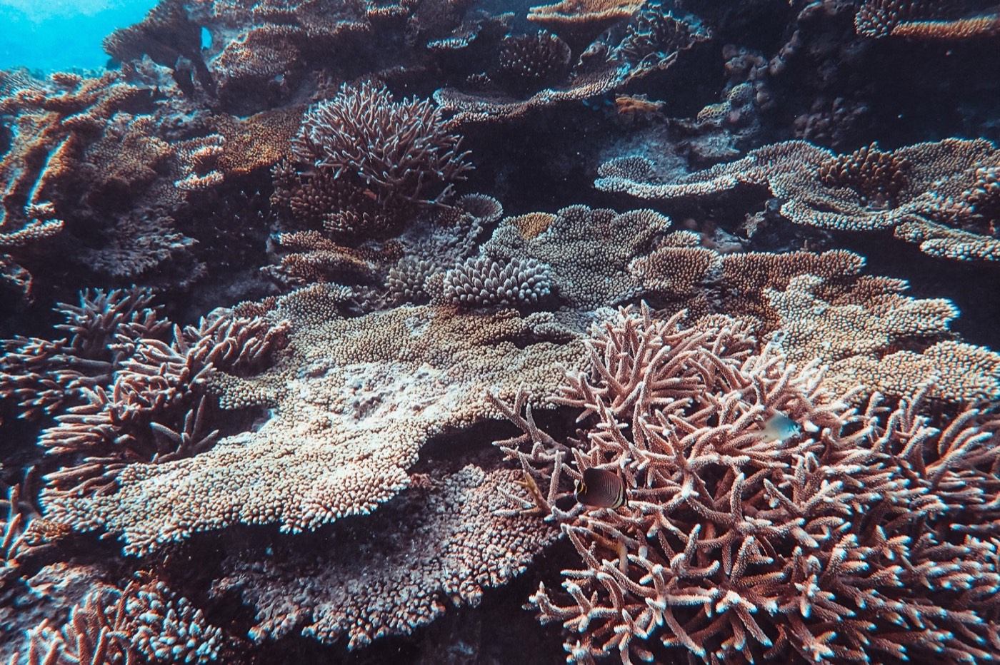
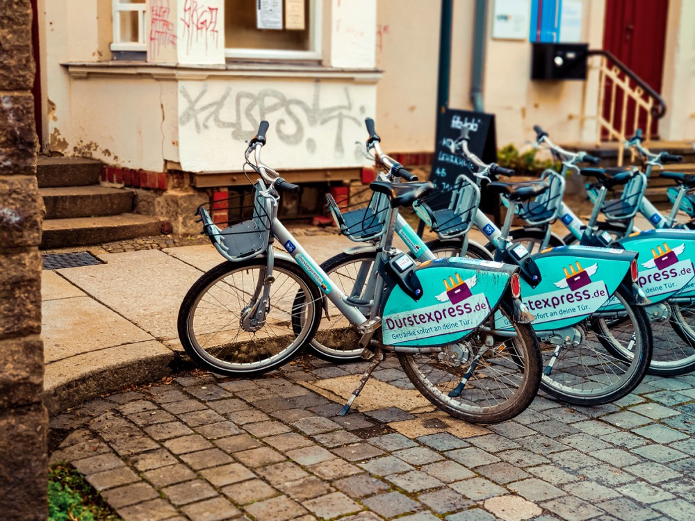
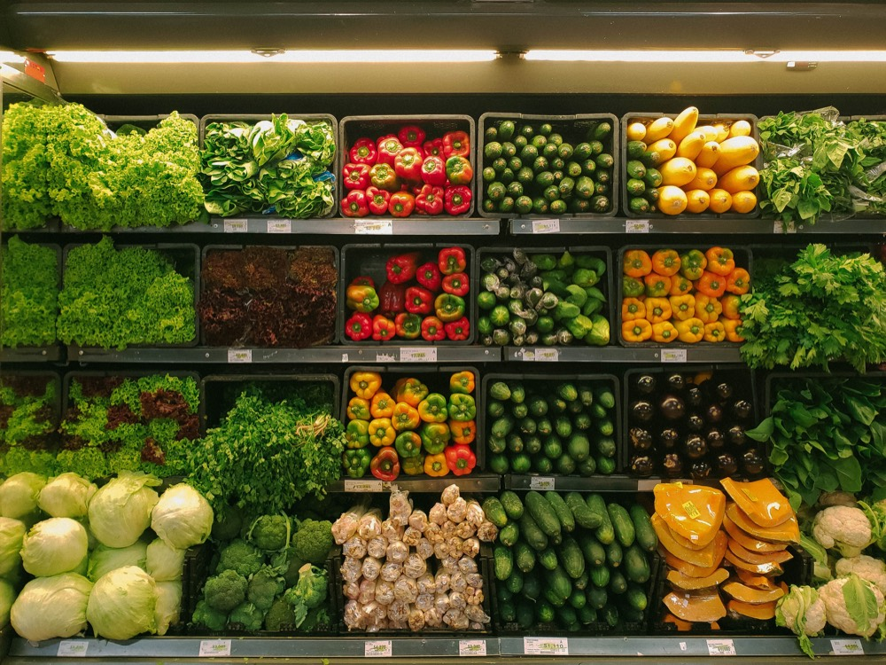

Cheryl Tan
A collection of projects using SQL, Python, Excel, Tableau and Power BI.
Blending data analytics and machine learning to empower communities and individuals to make data-driven decisions.

A collection of projects using SQL, Python, Excel, Tableau and Power BI.
Blending data analytics and machine learning to empower communities and individuals to make data-driven decisions.

Determine people's sentiment about COVID-19 based on hashtags and keywords from tweets using the live streamed Twitter API.
Tools: Tableau, Python. Using web APIs to retrieve live COVID-19 case counts and deaths, with the potential to expand into a decision-making tool for clinicians.

US bikeshare data extracted from PostgreSQL with visualisations in Python, addressing questions on customer trends.
Recommendations to Melbourne City Council for the removal of under-utilised parking bays to maximise green space.

Tools: Python, Flask, PyTorch. An image classifier trained and deployed as a web application.
Tools: Python, machine learning (apriori, association rules). Optimising cross-selling strategies through association-rule mining.